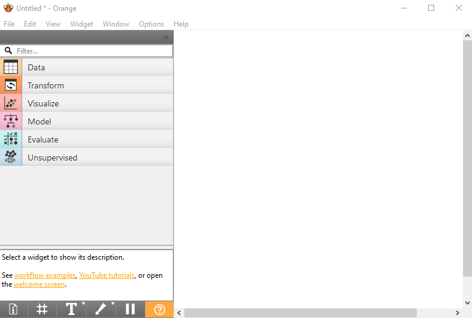
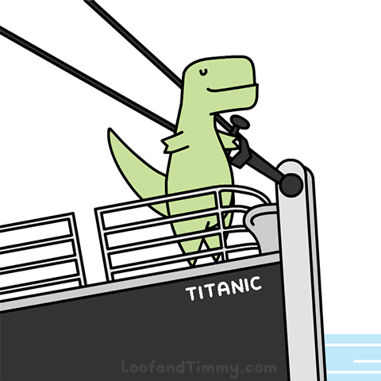
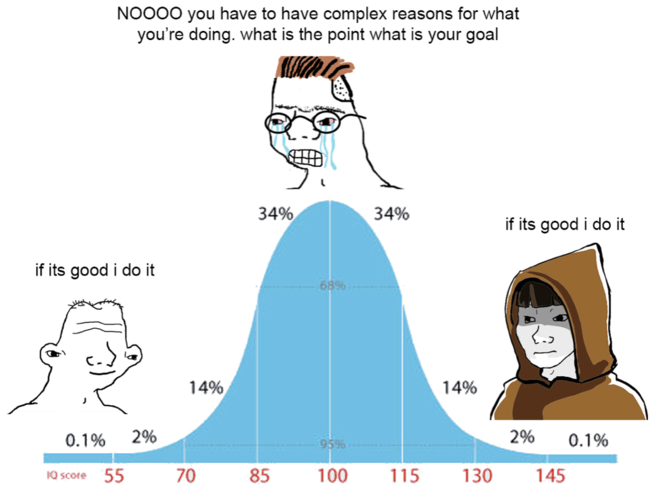
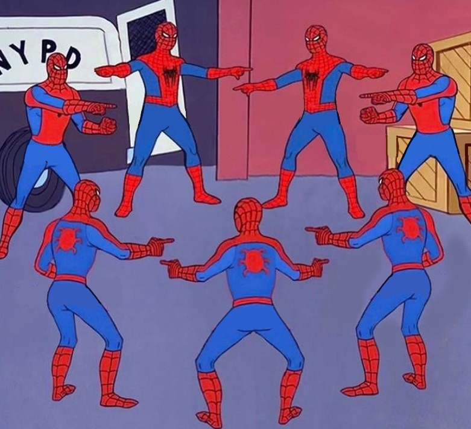
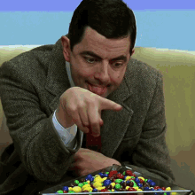

Sesión 1 de laboratorio: Introducción a Orange y manejo de datos
Objetivos de la sesión
🎯 Objetivo general:
Familiarizarse con la herramienta Orange Data Mining y aprender a explorar y manejar datos antes de aplicar modelos.
Orange Data Mining permite construir flujos de trabajo visuales para analizar datos, explorar relaciones entre variables y preparar datasets para modelado.
Es una plataforma de software libre orientada a la enseñanza y experimentación en ciencia de datos y aprendizaje automático. Su interfaz gráfica intuitiva permite arrastrar y conectar widgets para realizar tareas como carga de datos, visualización, preprocesamiento, modelado y evaluación de resultados sin necesidad de programar.
Orange también ofrece extensiones para análisis avanzado, minería de texto, bioinformática y visualizaciones interactivas, facilitando el aprendizaje y la exploración de técnicas modernas de inteligencia artificial.
En esta sesión nos centraremos en:
- Aprender a navegar la interfaz de Orange y sus principales categorías de widgets.
- Cargar y examinar conjuntos de datos reales.
- Identificar y clasificar los tipos de variables presentes en los datos.
- Visualizar distribuciones y relaciones entre variables para descubrir patrones.
- Seleccionar variables relevantes y personalizar el análisis.
- Detectar problemas comunes en los datos, como valores ausentes o inconsistencias.
Estas habilidades son fundamentales para realizar análisis exploratorio y preparar los datos antes de aplicar algoritmos de aprendizaje automático.
¡Vamos a comenzar!
Actividades propuestas
⚠️ Nota: cada actividad de abajo hay que hacerla dos veces — una con titanic.tab y otra con heart_disease.tab — para poder comparar un dataset totalmente categórico con uno que tiene variables numéricas reales.
1. Exploración de la interfaz de Orange
🎯 Objetivo: Familiarizarse con la interfaz gráfica y widgets.
En esta actividad exploraremos la interfaz de Orange y sus principales componentes.

Para ello comienza haciendo lo siguiente:
- Abre la aplicación Orange y explora la interfaz.
- Examina las categorías de widgets: Data, Visualize, Model, Evaluate.
- Arrastra 2-3 widgets de diferentes categorías al lienzo (por ejemplo, File, Scatter Plot, Test & Score).
- Conecta los widgets y observa cómo fluye la información entre ellos.
- Explora las opciones de configuración de cada widget.
📝 Preguntas:
- ¿Qué permite hacer cada categoría?
- ¿Qué ventajas observas de trabajar visualmente con flujos de trabajo? <!– 1. Data: Permite cargar, explorar y preparar los datos antes del análisis.
- Visualize: Ofrece herramientas para representar gráficamente los datos y descubrir patrones.
- Model: Facilita la aplicación de algoritmos de aprendizaje automático para construir modelos.
- Evaluate: Permite comparar y validar el rendimiento de los modelos generados.
- Trabajar visualmente con flujos de trabajo ayuda a entender mejor cada paso del análisis, facilita la experimentación y permite identificar rápidamente errores o mejoras en el proceso. –>
2. Carga de datos y visualización básica
🎯 Objetivo: Aprender a cargar datasets y visualizar sus contenidos.

En esta actividad deberás aprender a cargar un conjunto de datos en Orange y explorar su contenido utilizando los widgets disponibles. Para ello:- Arrastra el widget File al lienzo y selecciona el archivo de datos proporcionado (
titanic.tab,heart_disease.tab). - Conecta el widget File al widget Data Table para visualizar el dataset.
- Observa las columnas (atributos), filas (instancias) y los tipos de variables presentes en el conjunto de datos.
- Conecta el widget File al widget Data Info para obtener un resumen del dataset, incluyendo número de filas, columnas, tipos de variables y valores ausentes.
Esta exploración inicial te permitirá familiarizarte con la carga y visualización de datos en Orange, así como identificar posibles problemas que podrían afectar el análisis posterior.
📝 Preguntas:
- ¿Cuántas columnas y filas tiene el dataset?
- ¿Qué tipo de variables (categóricas, numéricas) puedes identificar?
- ¿Cuál es el propósito de la variable objetivo en este análisis?
- ¿Existen valores ausentes o inconsistentes en los datos? ¿Cómo los identificaste?
- ¿Por qué es importante revisar los datos antes de aplicar modelos?
3. Clasificación de tipos de variables
🎯 Objetivo: Diferenciar variables categóricas, numéricas y la variable objetivo.
En esta actividad vas a identificar y clasificar los tipos de variables presentes en el conjunto de datos, diferenciando entre variables categóricas, numéricas y la variable objetivo (target). Esto es fundamental para entender cómo se pueden utilizar los datos en modelos de aprendizaje automático y para seleccionar correctamente la variable que se desea predecir.
Para ello, realiza los siguientes pasos:
- Observa el dataset cargado en el widget Data Table y revisa cada columna.
- Utiliza el widget Data Info para obtener un resumen de los tipos de variables presentes (categóricas, numéricas, etc.).
- Analiza los nombres y valores de las columnas para identificar cuál podría ser la variable objetivo (la que se desea predecir).
📝 Preguntas:
- ¿Cuáles son las variables categóricas y cuáles son numéricas en el dataset?
- ¿Qué problemas podrían surgir si se elige otra variable como objetivo?
- ¿Cómo afecta la selección de la variable objetivo al tipo de modelo que se puede aplicar posteriormente?
4. Visualización de distribuciones
🎯 Objetivo: Explorar cómo se distribuyen los valores de las variables.
Vas ahora a visualizar las distribuciones de las variables en el conjunto de datos para entender mejor su comportamiento y características. Esto te ayudará a identificar patrones, tendencias y posibles problemas como desbalances en las clases.

Comienza haciendo lo siguiente:
- Arrastra el widget Distributions al lienzo y conéctalo al widget File o Select Columns.
- Selecciona una variable numérica para ver su histograma y una variable categórica para ver su gráfico de barras.
- Observa la forma de las distribuciones, la presencia de valores atípicos y la frecuencia de cada categoría.
- Repite el proceso para varias variables importantes en el dataset, incluyendo la variable objetivo.
- Prueba a hacer este estudio usando el widget Feature Statistics.
📝 Preguntas:
- ¿Qué variables parecen más relevantes?
- ¿Cómo afecta un desbalanceo al entrenamiento del modelo?
- ¿Qué observas sobre la presencia de valores atípicos en las variables numéricas?
- ¿Cómo puede influir la distribución de las variables en la elección de técnicas de preprocesamiento y modelado? <!– 1. Las variables con distribuciones más variadas o con mayor impacto en la variable objetivo suelen ser más relevantes.
- Un desbalanceo en las clases puede llevar a que el modelo aprenda a predecir siempre la clase mayoritaria, afectando negativamente su rendimiento.
- La presencia de valores atípicos puede distorsionar las estadísticas descriptivas y afectar el rendimiento del modelo.
- La distribución de las variables influye en la elección de técnicas como normalización, estandarización o transformación de datos. –>
5. Relaciones entre variables
🎯 Objetivo: Observar patrones y correlaciones entre variables.
En esta actividad explorarás las relaciones entre diferentes variables en el conjunto de datos para identificar patrones, correlaciones y posibles interacciones que puedan ser relevantes para el análisis. Esto es crítico para entender cómo las variables se relacionan entre sí y cómo pueden influir en la variable objetivo.

En este caso, realiza los siguientes pasos:
- Arrastra el widget Scatter Plot al lienzo y conéctalo al widget File o Select Columns.
- Selecciona dos variables numéricas para el eje X y el eje Y.
- Colorea los puntos según la variable objetivo para observar cómo se distribuyen las clases.
- Experimenta con diferentes pares de variables para descubrir otras relaciones interesantes.
📝 Preguntas:
- ¿Se observan agrupaciones o separaciones claras entre clases?¿Qué quiere decir esto?
- Interpreta los patrones vistos en los diagramas de dispersión.
- ¿Qué relaciones entre variables podrían ser útiles para predecir la variable objetivo?
- ¿Cómo podrían estas relaciones influir en la selección de características para el modelado? <!– 1. Si se observan agrupaciones claras, indica que las variables seleccionadas tienen un buen poder discriminativo para la variable objetivo.
- Los patrones pueden indicar correlaciones positivas o negativas entre variables, así como la presencia de outliers.
- Relaciones fuertes entre variables y la variable objetivo pueden ser útiles para mejorar la precisión del modelo.
- Estas relaciones pueden guiar la selección de características, ayudando a elegir variables que aporten información relevante y descartando las redundantes o irrelevantes. –>
6. Personalización del análisis
🎯 Objetivo: Seleccionar sólo las variables relevantes y mejorar el flujo de trabajo.

Como acabamos de ver no todas las variables en un conjunto de datos son igualmente útiles para el análisis o modelado. En esta actividad, aprenderás a seleccionar y enfocarte en las variables más relevantes, mejorando así la eficiencia y efectividad del análisis. Lo puedes hacer siguiendo estos pasos:- Usa el widget Select Columns para elegir las variables que consideres más importantes basándote en las visualizaciones previas.!
- Oculta columnas que no aporten información relevante (por ejemplo, identificadores únicos, nombres, etc.).
- Cambia la variable objetivo si es necesario y observa cómo afecta al análisis en los widgets conectados.
- Revisa y ajusta el flujo de trabajo para enfocarte en las variables seleccionadas.
📝 Preguntas:
- ¿Qué criterios usaste para seleccionar las variables relevantes?
- ¿Cómo afectó esto a las visualizaciones y al análisis?
- ¿Qué aprendiste sobre la importancia de la selección de variables en el análisis de datos?
- ¿Qué pasos seguirías para validar que las variables seleccionadas son las más adecuadas?
7. Detección de problemas en los datos
🎯 Objetivo: Identificar valores ausentes y otras irregularidades.
 Finalmente, es fundamental detectar y manejar problemas comunes en los datos, como valores ausentes, inconsistencias o errores. Estos problemas pueden afectar negativamente el análisis y la construcción de modelos si no se abordan adecuadamente.
Finalmente, es fundamental detectar y manejar problemas comunes en los datos, como valores ausentes, inconsistencias o errores. Estos problemas pueden afectar negativamente el análisis y la construcción de modelos si no se abordan adecuadamente.
Comprobarás esto utilizando la base de datos heart_disease.tab y siguiendo los siguientes pasos:
- Arrastra el widget Data Info al lienzo y conéctalo al widget File o Select Columns.
- Revisa el resumen del dataset que proporciona Data Info, prestando atención a:
- Número de filas y columnas.
- Tipos de variables.
- Valores ausentes o inconsistentes.
- Identifica cualquier problema potencial en los datos.
- Considera estrategias para tratar estos problemas, como rellenar valores ausentes, eliminar filas o columnas, o transformar datos.
📝 Preguntas:
- ¿Qué problemas encontraste en los datos?
- ¿Qué estrategias propondrías para manejar valores ausentes o inconsistencias?
- ¿Cómo decidirías entre eliminar datos o imputar valores?
- ¿Qué consecuencias puede tener ignorar valores perdidos?
Nota final
🎉 ¡Enhorabuena por el excelente trabajo! Ahora comprendes mejor la importancia de explorar y analizar los datos antes de modelar.
Antes de terminar, recuerda guardar tu flujo de trabajo con File > Save As… para poder retomarlo fácilmente en el futuro y seguir aprendiendo.
📤 Cómo entregar
- Guarda/exporta tu informe completado como PDF.
- Renombra el archivo PDF siguiendo la convención de abajo.
- Ve a Aula Global → esta asignatura → Tareas → buzón de entrega “Lab 1”, y sube el PDF antes de la fecha límite.
- Adjunta también tu archivo de flujo de trabajo de Orange (.ows, guardado con Archivo > Guardar como… en Orange) en la misma entrega.
Nombre del archivo: Lab1_Apellido_Nombre.pdf (ej. Lab1_Garcia_Maria.pdf)